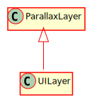

Hierarchy-Diagram
{kind=link}
Legend
 class
class
 public property
public property
 protected property
protected property
 public method
public method
Hierarchy
- ParallaxLayer
- UILayer
Index
Constructors
constructor
Properties
Protected alpha
The global alpha level of this layer
Protected depth
The depth of this layer compared to other layers
Protected hidden
Whether this layer is hidden from being rendered or not
Protected items
An array of the GameNodes that belong to this layer
Protected name
The name of this layer
parallax
The value of the parallax of the Layer
Protected paused
Whether this layer is paused or not
Protected scene
The scene this layer belongs to
Protected y
Whether or not this layer should be ysorted
Methods
add
Adds a node to this layer
Parameters
node: GameNode
The node to add to this layer.
Returns void
disable
Pauses this scene and hides it
Returns void
enable
Unpauses this layer and makes it visible
Returns void
get
Gets the opacity of the layer
Returns number
The opacity
get
Retrieves the depth of the layer.
Returns number
The depth
get
Retreives all GameNodes from this layer
Returns GameNode[]
an Array that contains all of the GameNodes in this layer.
get
Retreives the name of the layer
Returns string
The name of the layer
getYSort
Gets the ySort status of the scene
Returns boolean
True if ySorting is occurring, false otherwise
is
Returns the hideen value of the lyaer
Returns boolean
True if the scene is hidden, false otherwise
is
Returns whether or not the layer is paused
Returns boolean
remove
Removes a node from this layer
Parameters
node: GameNode
The node to remove
Returns void
true if the node was removed, false otherwise
set
Sets the opacity of the layer
Parameters
alpha: number
The new opacity value in the range [0, 1]
Returns void
set
Sets the depth of the layer compared to other layers. A larger number means the layer will be closer to the screen.
Parameters
depth: number
The depth of the layer.
Returns void
set
Sets the layer's hidden value. If hidden, a layer will not be rendered, but will still update
Parameters
hidden: boolean
The hidden value of the layer
Returns void
set
Pauses/Unpauses the layer. Affects all elements in this layer
Parameters
pauseValue: boolean
True if the layer should be paused, false if not
Returns void
setYSort
Sets whether or not the scene will ySort automatically. ySorting means that CanvasNodes on this layer will have their depth sorted depending on their y-value. This means that if an object is "higher" in the scene, it will sort behind objects that are "lower". This is useful for 3/4 view games, or similar situations, where you sometimes want to be in front of objects, and other times want to be behind the same objects.
Parameters
ySort: boolean
True if ySorting should be active, false if not
Returns void
A Layer strictly to be used for managing UIElements. This is intended to be a Layer that always stays in the same place, and thus renders things like a HUD or an inventory without taking into consideration the \reference[Viewport] scroll.